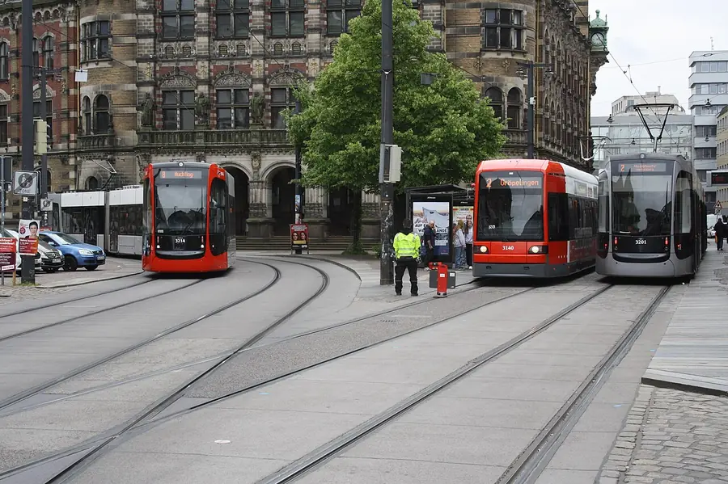

Start · From your hotel
Getting into town
A short walk from 7things to the tram stop Universität-Süd.
Take Tram 6 towards Flughafen (airport) and relax for about 17 minutes. Get off at Domsheide — you'll see the cathedral towers as you step out.
Tickets: for a simple there-and-back, the FAIRTIQ app
is usually the cheapest — swipe to check in before boarding, swipe out when you leave
(personal, bring photo ID). Planning more rides as a group? One Day Ticket
covers up to 5 adults (€9.50 + €3.50 per extra person) — buy it at the machine,
cards accepted.
–:–
Domsheide — where you get off